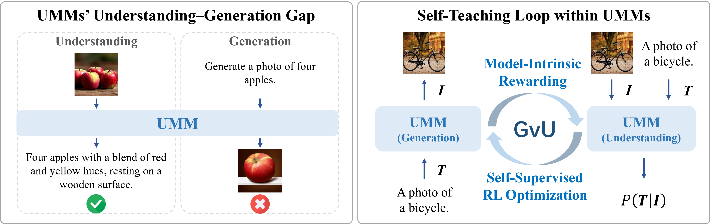
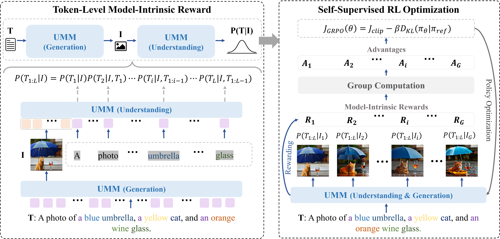
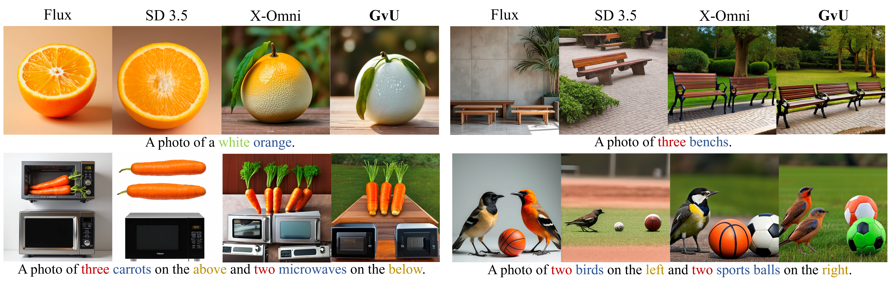
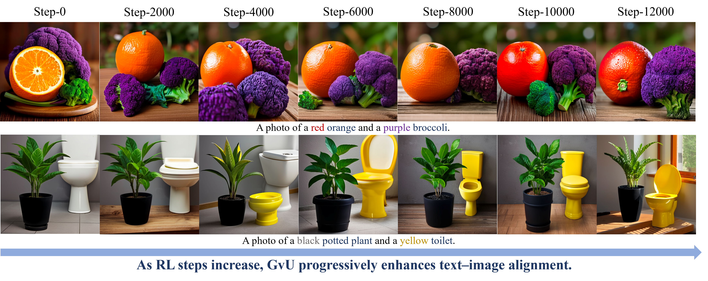
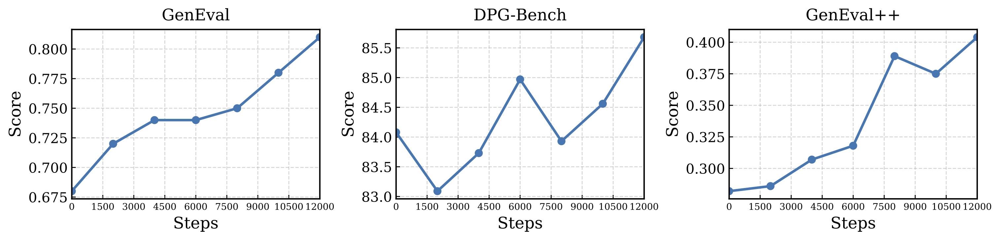

Abstract
Recently, unified multimodal models (UMMs) have made remarkable progress in integrating visual understanding and generation, demonstrating strong potential for complex text-to-image (T2I) tasks. Despite their theoretical promise, a persistent capability gap exists: UMMs typically exhibit superior visual understanding but comparatively weaker generative capabilities. This discrepancy arises largely from the intrinsic decoupling between the understanding and generation processes. While a UMM can accurately interpret fine-grained visual details, it often struggles to produce semantically coherent images from complex textual prompts. To address this challenge, we explore UMMs' internal understanding capability to enhance generation quality. We propose a token-level intrinsic text-image alignment reward mechanism,GvU, enabling the UMM to act simultaneously as teacher and student: it evaluates its own outputs using the understanding branch to guide the generations accordingly. Building upon this, we design a self-supervised reinforcement learning framework, allowing UMMs to iteratively improve their generation quality through understanding-based intrinsic reward signals—without reliance on external supervision. Experimental results show that our method substantially boosts UMMs' generation, which in turn strengthens their fine-grained visual understanding, narrowing the capability gap between UMMs' visual understanding and generation.
Motivation

(Left) UMMs exhibit an understanding–generation gap: they recognize visual details but fail to reflect them in generated images. (Right) Bottom: our self-teaching mechanism uses intrinsic rewards from the understanding branch to guide generation,improving text–image alignment without external supervision.
Method

Overview of the GvU implementation. It comprises two key components: the token-level model-intrinsic reward that provides fine-grained text–image alignment signals, and the self-supervised reinforcement learning process that uses these signals to enhance UMMs' generative ability progressively, enabling continuous self-improvement without external supervision.
Qualitative Results

Qualitative comparisons between our GvU and other methods. Compared to other approaches, GvU generates images with better text-image alignment and more coherent spatial layout.
Cumulative Effects of GvU Performance

Illustration of GvU’s generated results across training steps. With ongoing self-supervised reinforcement learning, our method effectively leverages intrinsic rewards to progressively enhance the text-image alignment, demonstrating continual improvement in T2I tasks.
Benchmark Curves of GvU

Evolution across multiple benchmarks during the self-supervised RL process. As the RL training steps increase, our model demonstrates steadily improved visual generation performance.
BibTeX
@article{YourPaperKey2024,
title={Your Paper Title Here},
author={First Author and Second Author and Third Author},
journal={Conference/Journal Name},
year={2024},
url={https://your-domain.com/your-project-page}
}